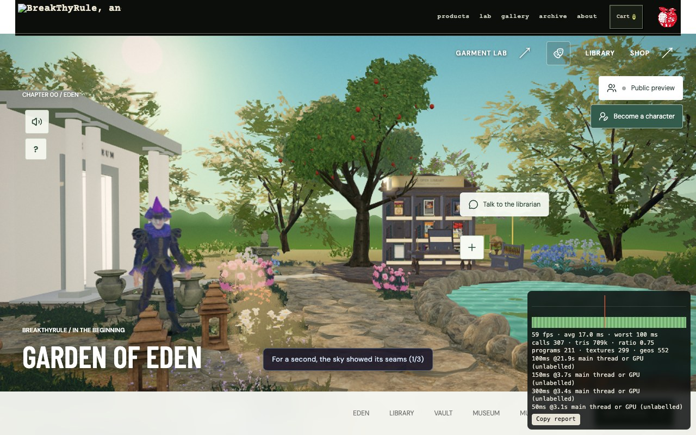
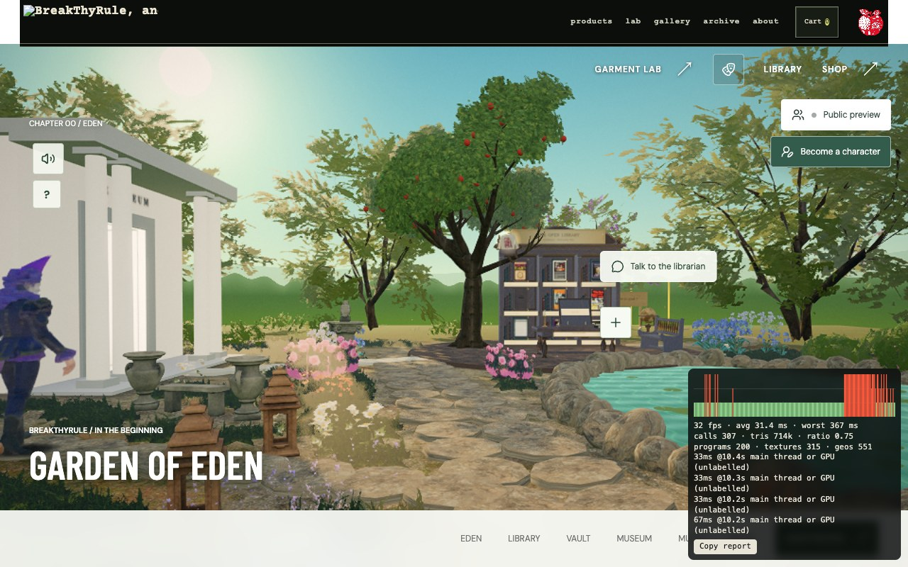

BREAK THY RULE · MEASURED BUILD REVIEW
Beyond Eden
Lighting & combat
Locally baked moonlight and street lamps, recorded combat audio, bounded gunfire effects, building LOD, and reusable character rigs.
Enter Beyond Eden ↗ · Implementation notes · Measured results
Measurements were captured in isolated Chrome on one Apple M3 laptop at medium graphics, 1280 × 800. They are not a performance guarantee for every device.
Remaining limits: first-visit shaders still prepare behind loading screens. The later screenshot run had slower frames; an overall raw GPU speedup is not established. See the implementation notes and raw reports.
Lighting comparison
Matching camera positions and night phase. Counts include visible meshes eligible to cast a shadow, rather than triangles actually rendered inside the shadow camera. Render cost is a synchronous CPU submission plus GPU-completion benchmark with forced shadow updates; it is separate from the 60 Hz frame interval.
60 seconds of combat
Actual game raycasts, damage, reactions and audio. The capture uses god mode and a large ammunition reserve. Video recording is separate from the performance sample.
Eden comparison

Before
After — original daylight bake retained